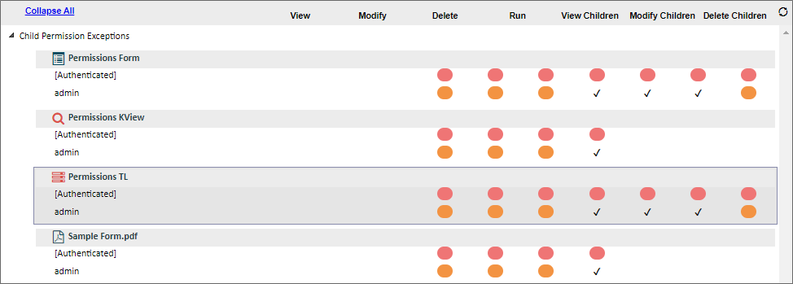
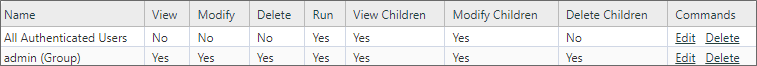
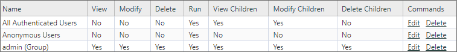

At the bottom of the Permissions tab a button labeled, Show Permission Exceptions, will, when clicked, display a chart of all child objects, if any, whose settings for the same assigned permissions class are different from the object you are viewing.

In the case of this example, the parent object is the application's parent folder. A form contained inside this folder, named Permissions Form, has different permissions from the folder in which it is contained. This chart can be used to determine which child objects may need to have permissions replicated.
The circles show permissions where the permissions differ between each class. The check marks denote permissions where the settings are the same for each object. To interpret this chart, let's look at the permissions for the parent folder and the Permissions Form.


See also: